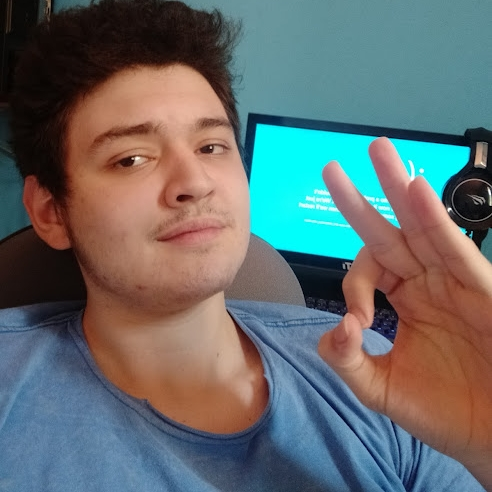

Olá! Me chamo Daniel Dezena
Tenho atualmente 18 anos, moro na cidade de Hortolândia no estado de São Paulo e A D O R O pimenta.
Sou um desenvolvedor front-end Júnior, faço pixel arts e personagens 3d, amador de gatos e diposto para novos desafios!
Meu interesse na tecnologia
No meu primeiro contato com a tecnologia foi durante minha infância, a experiência que eu tive na época foi de ter medo do computador ser infectado ou então explodir. Porém através deste medo eu tomei coragem e fui atrás de respostas sobre como
funciona um virus de computador, quanto mais eu pesquisava, mais curioso eu ficava e com esta curiosidade eu decidi em começar a minha caminhada como um desenvolvedor.